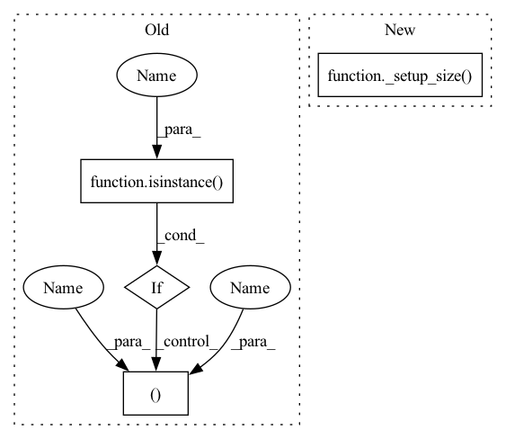

Pattern ID :20519

Before Change
img_ = transform(img)
"""
def __init__(self, size):
if isinstance(size, int):
size = (size, size)
assert isinstance(size, tuple)
self.size = size
After Change
img_ = transform(img)
"""
def __init__(self, size):
self.size = _setup_size(size, error_msg="If size is a sequence, it should have 2 values")
def __call__(self, img: Image.Image):
width, height = _get_image_size(img)
assert self.size[0] <= height and self.size[1] <= width, f"crop size exceeds the input image in RandomCrop"
In pattern: SUPERPATTERN
Frequency: 3
Non-data size: 4
Instances
Fragment ID: 66340012
Project Name: jittor/jittor
Commit Name: 3d07af7917d5533686c2386d9d8443e66ebf45ab
Time: 2020-10-03
Author: yaox12@outlook.com
File Name: python/jittor/transform/transform.py
M Class Name: RandomCrop
N Class Name: RandomCrop
M Method Name: __init__(2)
N Method Name: __init__(2)
M Parent Class:
N Parent Class:
M File Name: python/jittor/transform/transform.py
N File Name: python/jittor/transform/transform.py
M Start Line: 584
M End Line: 587
N Start Line: 614
N End Line: 614
'>
Before Change
img_ = transform(img)
def __init__(self, size, scale:tuple=(0.08, 1.0), ratio:tuple=(3. / 4., 4. / 3.), interpolation=Image.BILINEAR):
if isinstance(size, int):
size = (size, size)
assert isinstance(size, tuple)
assert scale[0] <= scale[1] and ratio[0] <= ratio[1]
After Change
img_ = transform(img)
def __init__(self, size, scale:tuple=(0.08, 1.0), ratio:tuple=(3. / 4., 4. / 3.), interpolation=Image.BILINEAR):
self.size = _setup_size(size, error_msg="If size is a sequence, it should have 2 values")
assert scale[0] <= scale[1] and ratio[0] <= ratio[1]
self.scale = scale
self.ratio = ratio
'>
Fragment ID: 66340013
Project Name: jittor/jittor
Commit Name: 3d07af7917d5533686c2386d9d8443e66ebf45ab
Time: 2020-10-03
Author: yaox12@outlook.com
File Name: python/jittor/transform/transform.py
M Class Name: RandomCropAndResize
N Class Name: RandomCropAndResize
M Method Name: __init__(5)
N Method Name: __init__(5)
M Parent Class:
N Parent Class:
M File Name: python/jittor/transform/transform.py
N File Name: python/jittor/transform/transform.py
M Start Line: 389
M End Line: 394
N Start Line: 400
N End Line: 400
'>
Before Change
img_ = transform(img)
"""
def __init__(self, size, interpolation=Image.BILINEAR):
if isinstance(size, int):
size = (size, size)
assert isinstance(size, tuple)
self.size = size
self.interpolation = interpolation
After Change
img_ = transform(img)
"""
def __init__(self, size, interpolation=Image.BILINEAR):
self.size = _setup_size(size, error_msg="If size is a sequence, it should have 2 values")
self.interpolation = interpolation
def __call__(self, img: Image.Image):
return resize(img, self.size, self.interpolation)
'>
Fragment ID: 66340014
Project Name: jittor/jittor
Commit Name: 3d07af7917d5533686c2386d9d8443e66ebf45ab
Time: 2020-10-03
Author: yaox12@outlook.com
File Name: python/jittor/transform/transform.py
M Class Name: Resize
N Class Name: Resize
M Method Name: __init__(3)
N Method Name: __init__(3)
M Parent Class:
N Parent Class:
M File Name: python/jittor/transform/transform.py
N File Name: python/jittor/transform/transform.py
M Start Line: 544
M End Line: 547
N Start Line: 548
N End Line: 548